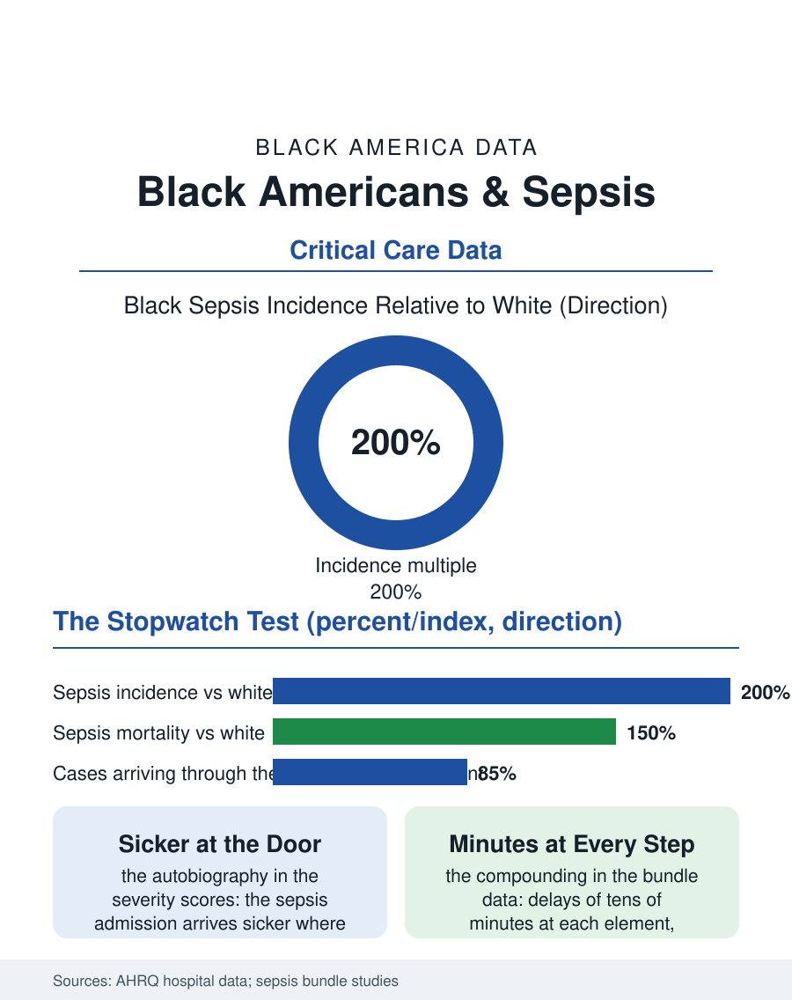

Black Public Health
The Stopwatch Test: Black Americans and Sepsis
Twice the incidence, sicker at the door, minutes lost at every bundle step: sepsis is the health system's stopwatch test and its split times are uneven. The sepsis file.

Sepsis, the body's catastrophic response to infection, kills more Americans than most cancers, and its incidence and mortality in Black Americans run at roughly twice the white rates in the hospital data, a multiple composed of the infection burden upstream, the chronic disease substrate, and the speed of the hospital response whose timing the quality programs measure in minutes. This article reads the sepsis file.
Twice the Incidence
The epidemiology begins before the hospital: the infections that seed sepsis, the pneumonias, the urinary and kidney infections, the skin and soft tissue infections of the diabetes file, distribute by the chronic burden's map, and the substrate, the diabetes, the kidney disease, the immune compromise of the health file's whole ledger, raises both the seeding rate and the progression's speed, so that the Black patient's sepsis arrives more often and, in the presentation data, sicker, the organ failure scores at the door running ahead of the white patient's in the matched analyses. The geography adds the exposure layer: the hospital deserts and the primary care thinness of the access file lengthen the infection's untreated runway, the antibiotics that would have been a clinic prescription becoming the ICU's resuscitation, a conversion the emergency file's data make legible, the sepsis admission arriving through the emergency department in the great majority, its severity a partial autobiography of the care that was not available the week before. The nursing home and dialysis populations hold the file's highest-risk reservoir, the chronically instrumented patient, the catheter and the access line as standing invitations, whose infection prevention is a daily nursing discipline in facilities whose staffing the workforce files describe, and whose sepsis presentations, blunted and atypical in the elderly, test the recognition system's edge cases precisely where its training data are thinnest and its patients most numerous.
The Bundle and the Clock
Sepsis care is the quality movement's most protocolized race against time: the bundle, the lactate and the cultures, the antibiotics within the hour window the guidelines set, the fluids and the pressors on their triggers, and the compliance data by race compose the file's hospital chapter: the studies find the bundle's elements delivered to Black patients with small delays at each step, the antibiotic timing gap measured in the tens of minutes that the mortality curves price steeply in the illness's first hours, compounding in the pattern of the cascade files into a survival difference the risk adjustment narrows and does not close. The hospital distribution overlays the encounter: the safety-net hospitals that serve the Blackest catchments run the highest sepsis volumes against the thinnest staffing ratios in the quality data, their bundle compliance under the resource constraint a standing subject of the penalty files, the sepsis outcome being among the measures by which the readmissions and value programs judge the hospitals the burden chose. The recognition file is the frontier the current research works: the sepsis alert algorithms, trained on the historical record, inherit its patterns in the pattern of the models file, their validation by race now a required exhibit in the deployment literature.
The Survivors' File
The sepsis file closes after the discharge, because the syndrome's ledger extends into the survivorship the critical care literature now counts: the post-intensive care syndrome, the cognitive and functional deficits, the readmissions file's familiar names, fall on the sepsis survivor at rates that make the episode a chronic disease's beginning, and the rehabilitation and follow-up access files govern the recovery's distribution as they govern the stroke's. The prevention file is the closing argument's: the vaccine-preventable pneumonias and influenza of the immunization file, the diabetes control of the metabolic file, the dialysis access care of the kidney file, are the sepsis program that runs before the bundle's clock starts, and its rates by race are the incidence multiple's true address. The hospital data count the cases at twice the rate and the deaths at a multiple the bundle's minutes only partly explain. The file's last entry is the hour's: sepsis is the health system's stopwatch test, the one diagnosis where the minutes are published and the mortality curve is a clock face, and the Black patient's times, at the door, at the antibiotic, at the ICU bed, are the system's honest split times, improving under measurement, and not yet even.
More in Black Public Health
Hypertension Among Black Adults: Prevalence, Control, and Consequences
About 55 percent of Black adults have hypertension — the highest rate of any U.S. group. Prevalence, onset, control, and the stroke, heart, and kidney consequences in the data.
Diabetes Among Black Adults: Prevalence and Complications
Nearly one in five Black adults has diabetes, diagnosed or undiagnosed — and its complications fall with particular weight. The CDC data on prevalence, control, and outcomes.
Black Life Expectancy: The Gap at Birth and Its Causes
Black life expectancy at birth is about 73 years, roughly five years below the national figure — the summary measure of every health gap in this section. The CDC data.
Source: Agency for Healthcare Research and Quality, Healthcare Cost and Utilization Project; Surviving Sepsis Campaign bundle compliance literature.